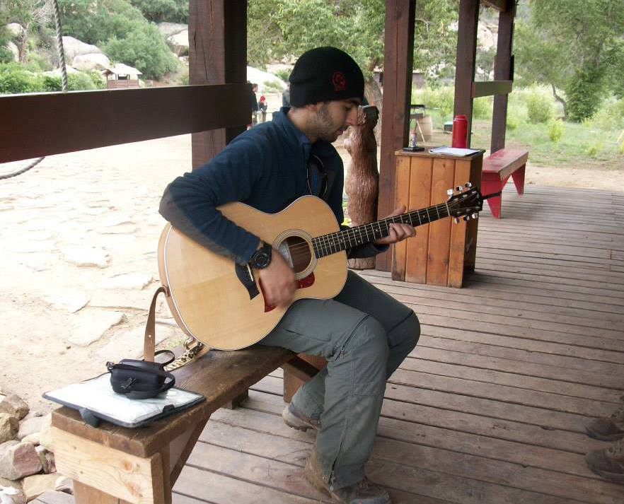

Ayaz Latif
Hello! I am a Graduate Student in the Paul G. Allen School of Computer Science & Engineering at the University of Washington studying Computer Science with a focus on Data Science topics. I am currently a Head TA for CSE 143x, Accelerated Intro to Programming, at UW.
Experience
Head TA
Lead and organize weekly Exploration Sessions for Intro Series class (1500+ students), mentor 75+ TAs, work closely with professors to discuss grading criteria and class curriculum, work closely with TA Coordinators to handle administrative details
TA Coordinator
Interviewing and selecting new TAs, organizing weekly training sessions for new TAs, running weekly TA Community meetings, supervise and mentor 75+ TAs, administer TA evaluations, work closely with staff to handle administrative details
CSE Intro Series TA
Lead class of 25 students, assisted students with homework assignments, graded exams and assignments, proctored exams, attended weekly community planning meetings.
Intern
Developed tools to facilitate Java learning in classes. Ran Hackathon event for 25 high school students. Taught Java online to other students.
Intern
Conducted market research on the information security challenges related to the Internet of Things. The research focused on the healthcare, automotive and home monitoring industries.
Education 
University of Washington
Paul G. Allen School of Computer Science & Engineering
University of Washington
Paul G. Allen School of Computer Science & Engineering
Skills
- TA Coordinator
- Dawg Daze Team Captain
- Boy Scouts of America - Eagle Scout
Hobbies 
My love for playing guitar has given me opportunities to expand my experiences beyond my community. I worked with Buddies Without Borders, a nonprofit organization, to aid in fundraising efforts by creating a music video to raise disaster awareness for natural disasters such as floods and earthquakes. I also have performed live several times at a Silicon Valley business' (Accretive Wealth) award ceremony. These performances stretch my creative thinking and inspire me to continue to develop my musical language to appeal to larger and more diverse audiences. I teach guitar in my spare time as well, so if you are looking to learn feel free to contact me! :)
Projects
Biliscreen Android Application
Selected to be part of a research team to utilize machine learning and computer vision to build an application that scans human eyes to identify the level of bilirubin to assist in the early identification of pancreatic cancer and Jaundice. Developed algorithms to classify the eye using machine learning and computer vision. Currently developing this app for the Ubiquitous Computing Lab at UW as part of a research program.
SimpleDb (Database Management System)
Built a robust Database Management System that can recover from crashes, process several transactions concurrently, and manage several database files. SimpleDb has 4 main components I built, a storage manager, query processor, shared utilities manager, and a log manager for recovery. Developed over the course of 10 weeks in a Database Internals course.
Shuffle Tool
Built a simple website that uses a javascript text to shuffle lines of string. Developed for CSE 14x TA Community Meetings.
Campus Paths Android Application
Built modular software that can be easily expanded on. The inspiration was to follow a model view and controller design in the application. Implemented Dijkstra's algorithm so that the app finds the shortest path between two building around UW Campus. Developed over the course of 9 weeks in a Software Design & Implementation course at UW.
File Directory Search Engine
Built data structures to process queries based on key words found in files, a file index system (inverted index) to save an index of files in a directory, and a web server to host the search engine. Developed over the course of 9 weeks in a Systems Programming course at UW.